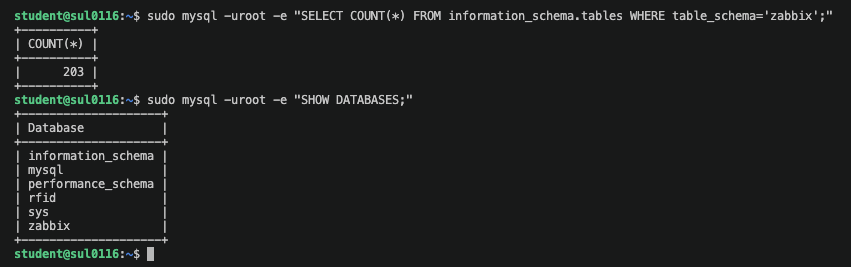
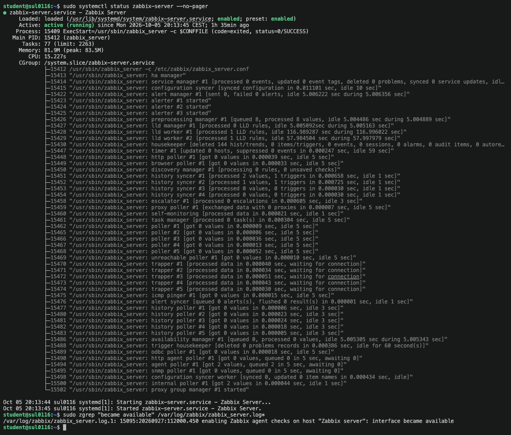
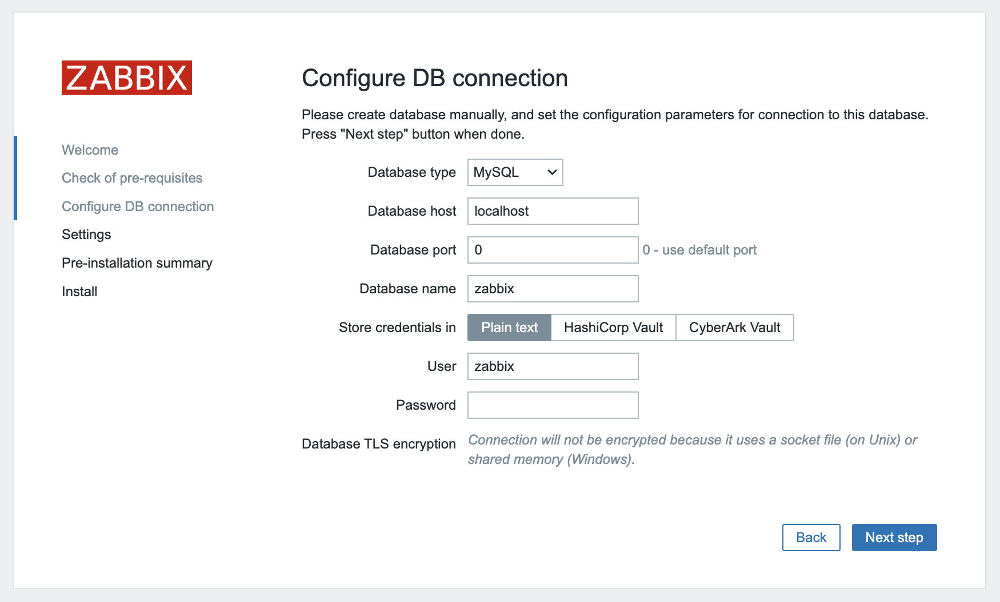
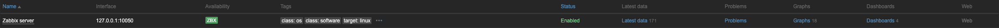
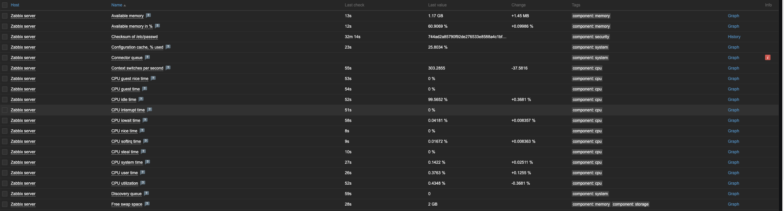
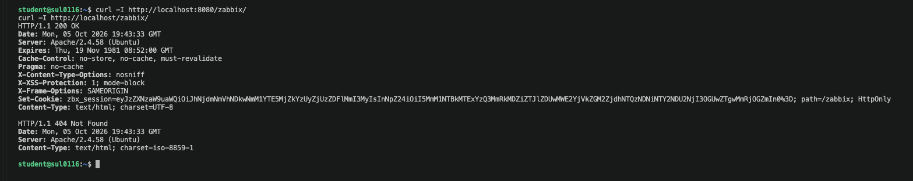
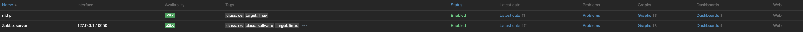
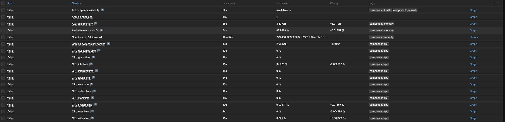
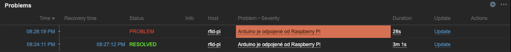
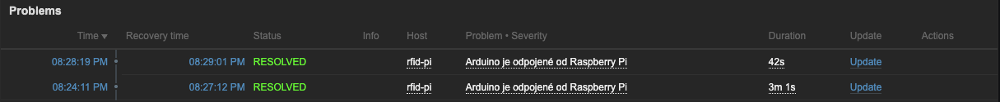

Úvod a cíl projektu
Cílem projektu bylo zprovoznit monitorovací systém Zabbix na virtuálním serveru, který nám byl přidělen v rámci předmětu. Zabbix průběžně sbírá data o stavu zařízení a služeb (vytížení procesoru, paměť, disky, síťový provoz, dostupnost), ukládá je do databáze, zobrazuje je v grafech a při překročení nastavených limitů hlásí problémy.
Dílčí cíle:
- nainstalovat Zabbix server, webové rozhraní a Zabbix agenta,
- připravit databázi MariaDB a naimportovat do ní schéma Zabbixu,
- spravovat uživatele webového rozhraní,
- monitorovat samotný virtuál, na kterém Zabbix běží,
- přesunout webové rozhraní na port 8080, aby port 80 zůstal volný pro další server,
- zpřístupnit rozhraní pod jménem místo IPv6 adresy,
- monitorovat Raspberry Pi v domácí síti a hlídat připojení Arduina.
Prostředí a topologie
Všechny součásti běží na jednom virtuálu sul0116. Připojení probíhá
z vlastního notebooku přes školní VPN, SSH i webové rozhraní jedou přes IPv6.
| Součást | Verze / hodnota | Úloha |
|---|---|---|
| Operační systém | Ubuntu Server 24.04.1 LTS | základ virtuálu |
| Zabbix server | 7.0.31 LTS | sběr a vyhodnocování dat, port 10051 |
| Zabbix agent | 7.0 LTS | měření na monitorovaném stroji, port 10050 |
| Databáze | MariaDB 10.11.14 | úložiště konfigurace a naměřených hodnot |
| Webový server | Apache 2.4.58 + PHP | webové rozhraní Zabbixu, port 8080 |
Síťová rozhraní virtuálu
| Rozhraní | Adresa |
|---|---|
ens160 | 2001:718:1001:2cf:20c:29ff:fedc:bef2 |
ens192 | 192.168.0.186/16 |
ens224 | 10.0.0.49/8 |
- Apache :8080 → webové rozhraní
- Zabbix server :10051
- Zabbix agent :10050
- MariaDB :3306 (jen lokálně)
Instalace
Použil jsem verzi Zabbix 7.0 LTS s databází MariaDB a webovým serverem Apache. Verze LTS má dlouhodobou podporu a je k ní nejvíc dokumentace.
-
Ověření systému a aktualizace
cat /etc/os-release sudo apt update && sudo apt upgrade -yPo aktualizaci byl virtuál restartován.
-
Přidání repozitáře Zabbix
wget https://repo.zabbix.com/zabbix/7.0/ubuntu/pool/main/z/zabbix-release/zabbix-release_latest_7.0+ubuntu24.04_all.deb sudo dpkg -i zabbix-release_latest_7.0+ubuntu24.04_all.deb sudo apt update -
Instalace balíčků
sudo apt install -y zabbix-server-mysql zabbix-frontend-php zabbix-apache-conf \ zabbix-sql-scripts zabbix-agent mariadb-server -
Vytvoření databáze
CREATE DATABASE zabbix CHARACTER SET utf8mb4 COLLATE utf8mb4_bin; CREATE USER zabbix@localhost IDENTIFIED BY '<heslo_db>'; GRANT ALL PRIVILEGES ON zabbix.* TO zabbix@localhost; SET GLOBAL log_bin_trust_function_creators = 1; -
Import schématu
zcat /usr/share/zabbix-sql-scripts/mysql/server.sql.gz | \ mysql --default-character-set=utf8mb4 -uzabbix -p zabbix sudo mysql -uroot -e "SET GLOBAL log_bin_trust_function_creators = 0;"Kontrola, že import proběhl celý:
sudo mysql -uroot -e "SELECT COUNT(*) FROM information_schema.tables WHERE table_schema='zabbix';"Výsledek byl 203 tabulek, což odpovídá kompletnímu schématu.

Vytvoření databáze a kontrola importu -
Heslo k databázi v konfiguraci serveru
V souboru
/etc/zabbix/zabbix_server.confjsem odkomentoval a vyplnil řádek:DBPassword=<heslo_db> -
Spuštění služeb
sudo systemctl restart zabbix-server zabbix-agent apache2 sudo systemctl enable zabbix-server zabbix-agent apache2 sudo tail -n 20 /var/log/zabbix/zabbix_server.logV logu se objevil řádek
enabling Zabbix agent checks on host "Zabbix server": interface became available, tedy server se připojil k databázi i ke svému agentovi.
Zabbix server běží a agent je dostupný
Webový průvodce a první přihlášení
Webové rozhraní se při prvním otevření nastavuje průvodcem. Ten zkontroluje požadavky PHP a zeptá se na připojení k databázi.
| Položka | Hodnota |
|---|---|
| Typ databáze | MySQL |
| Server | localhost, port 0 (výchozí) |
| Databáze a uživatel | zabbix / zabbix |
| Časové pásmo | Europe/Prague |
Po instalaci jsem se přihlásil výchozím účtem Admin a heslo jsem hned změnil.

Správa uživatelů
Uživatel se stejnými právy jako Admin
Nový uživatel dostal stejná oprávnění jako výchozí správce:
- skupina Zabbix administrators,
- role Super admin role na záložce Oprávnění.
Monitoring samotného serveru
Po instalaci Zabbix automaticky monitoruje sám sebe přes hostitele Zabbix server.
Agent běží na stejném virtuálu a server se k němu připojuje přes 127.0.0.1:10050.
Kontrola agenta
sudo grep -E "^(Server|ServerActive|Hostname)=" /etc/zabbix/zabbix_agentd.conf
# Server=127.0.0.1
# ServerActive=127.0.0.1
# Hostname=Zabbix server
sudo apt install -y zabbix-get
zabbix_get -s 127.0.0.1 -k agent.ping # výsledek 1 = agent odpovídáNastavení hostitele ve webu
| Nastavení | Hodnota |
|---|---|
| Rozhraní | Agent, 127.0.0.1, port 10050 |
| Šablona | Linux by Zabbix agent |
| Skupina | Zabbix servers |
| Stav | Povoleno, ikona ZBX zelená |
Šablona Linux by Zabbix agent přináší stovky položek, grafy a triggery:
vytížení CPU, paměť, zaplnění disků, provoz na rozhraních ens160,
ens192 a ens224 a počet procesů.


Přesun na port 8080 a vlastní doména
Na stejném virtuálu má později běžet další webový server na portu 80. Webové rozhraní Zabbixu jsem proto přesunul do samostatného virtual hostu na port 8080. Porty 10050 a 10051 se nemění, s webem nesouvisí.
-
Vypnutí globální konfigurace
Balíček Zabbixu přidává alias
/zabbixplatný na všech portech. Ten jsem vypnul:sudo a2disconf zabbix -
Nový port
Do
/etc/apache2/ports.confpřibyl řádek:Listen 8080 -
Virtual host
Soubor
/etc/apache2/sites-available/zabbix.conf:<VirtualHost *:8080> ServerName sul0116.zabbix Include /etc/zabbix/apache.conf RedirectMatch ^/$ /zabbix/ ErrorLog ${APACHE_LOG_DIR}/zabbix_error.log CustomLog ${APACHE_LOG_DIR}/zabbix_access.log combined </VirtualHost>sudo a2ensite zabbix sudo apache2ctl configtest sudo systemctl restart apache2 -
Ověření
curl -I http://localhost:8080/zabbix/ # HTTP/1.1 200 OK curl -I http://localhost/zabbix/ # HTTP/1.1 404 Not FoundZabbix odpovídá jen na portu 8080 a port 80 je volný.

Kontrola obou portů pomocí curl -
Jméno místo IPv6 adresy
Reverzní DNS záznam virtuálu vrací jen
sul0116asul0116.local, plnohodnotnou doménu virtuál nemá. Jméno jsem proto definoval lokálně v souboru/etc/hostsna notebooku:2001:718:1001:2cf:20c:29ff:fedc:bef2 sul0116.zabbixsudo dscacheutil -flushcache; sudo killall -HUP mDNSResponderRozhraní je teď dostupné na adrese
http://sul0116.zabbix:8080.
Monitoring Raspberry Pi a Arduina
Kromě samotného virtuálu Zabbix hlídá i Raspberry Pi 5 v domácí síti a Arduino, které je k němu připojené přes USB. Zabbix server se k Pi nedostane, protože Pi je za domácím routerem a virtuál je dostupný jen přes školní VPN. Agent na Pi proto pracuje v aktivním režimu: sám se připojuje k serveru na port 10051 a posílá mu data.
- Zabbix agent na Raspberry Pi měří systém Pi a připojení Arduina
- domácí Wi-Fi, port 10051
- Notebook připojený k VPN, drží SSH tunel
- SSH tunel přes IPv6
- Zabbix server na sul0116 port 10051, ukládá data a vyhodnocuje triggery
Tunel na notebooku
V Cisco Secure Client je zapnutá volba Povolit místní přístup (síť LAN) při používání sítě VPN, aby notebook při zapnuté VPN viděl i domácí síť. Tunel přijímá spojení z domácí sítě na portu 10051 a předává je Zabbix serveru:
ssh -N -o ServerAliveInterval=30 -o ExitOnForwardFailure=yes \
-L 0.0.0.0:10051:localhost:10051 \
student@2001:718:1001:2cf:20c:29ff:fedc:bef2Agent na Raspberry Pi
sudo apt install -y zabbix-agentV souboru /etc/zabbix/zabbix_agentd.conf jsou nastavené tři hodnoty:
Server=127.0.0.1
ServerActive=192.168.1.183:10051
Hostname=rfid-pi
ServerActive je adresa notebooku s tunelem, Hostname musí
přesně odpovídat názvu hostitele v Zabbixu.
Vlastní kontrola Arduina
Arduino není síťové zařízení, takže ho Zabbix hlídá přes Pi. Když je Arduino zapojené,
systém vytvoří sériový port /dev/ttyUSB0. Vlastní klíč agenta zjišťuje,
zda port existuje:
# /etc/zabbix/zabbix_agentd.conf.d/arduino.conf
UserParameter=arduino.connected,test -e /dev/ttyUSB0 && echo 1 || echo 0zabbix_agentd -t arduino.connected
# arduino.connected [t|1] Arduino zapojené
# arduino.connected [t|0] Arduino odpojenéNastavení v Zabbixu
| Nastavení | Hodnota |
|---|---|
| Hostitel | rfid-pi, bez rozhraní |
| Šablona | Linux by Zabbix agent active (78 položek) |
| Položka | Arduino připojeno, klíč arduino.connected, typ Zabbix agent (aktivní), interval 30 s |
| Trigger | Arduino je odpojené od Raspberry Pi, závažnost High |
| Výraz triggeru | last(/rfid-pi/arduino.connected)=0 |
Šablona pro aktivního agenta přináší přehled o vytížení procesoru, paměti, disku, síti a teplotě Pi. Několik položek je ve stavu nepodporováno, protože je Pi neumí změřit, například rychlost linky Wi-Fi rozhraní. Na funkci monitoringu to nemá vliv.


Test odpojení Arduina
Po vytažení Arduina z USB vznikl ve 20:28:19 problém Arduino je odpojené od Raspberry Pi. Po zapojení se ve 20:29:01 sám uzavřel, výpadek trval 42 sekund.


Možná rozšíření
Projekt je připravený na další kroky:
- vlastní dashboard s grafy CPU, paměti a disku obou hostitelů,
- test triggeru uměle vyvolanou zátěží (
stress-ng), - webový scénář, který každou minutu ověří dostupnost webového rozhraní,
- další vlastní metriky přes
UserParameter, například počet dostupných aktualizací systému, - sledování neúspěšných SSH přihlášení z
/var/log/auth.log, - webový scénář pro další webovou službu na uvolněném portu 80.
Závěr
Na přiděleném virtuálu běží funkční Zabbix server 7.0 LTS s databází MariaDB a webovým rozhraním. Server monitoruje sám sebe přes Zabbix agenta a šablonu Linux by Zabbix agent, agent je dostupný a data se průběžně sbírají.
Webové rozhraní běží ve vlastním virtual hostu na portu 8080 pod jménem
sul0116.zabbix, takže port 80 zůstává volný pro další službu.
Zabbix kromě virtuálu hlídá i Raspberry Pi v domácí síti. Aktivní agent posílá data
přes SSH tunel na notebooku a vlastní klíč arduino.connected hlídá
připojení Arduina. Test potvrdil, že odpojení Arduina se do minuty objeví jako
problém a po zapojení se sám uzavře.
Projekt mi ukázal, jak spolu souvisí jednotlivé vrstvy monitorovacího systému (databáze, server, agent, webové rozhraní) a jak konfigurace Apache a sítě ovlivňuje, odkud a jak se ke službě dá dostat.